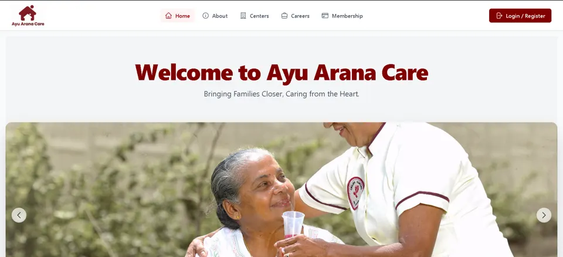

Case study · Team project
Ayu Arana Care
Management system for an elders' care home.

Overview
Ayu Arana Care is a management system for an elders' care home, built as a team project with MongoDB, Express, React and Node.js. I was the backend developer and also supported overall development, so this page focuses on the API.
Problem
A care home needs one place to manage residents, their medical records, memberships, payments and checkup requests, with staff only seeing what their role allows.
What I built. A MERN web app with role-based access control, resident medical records, membership tiers, payments and checkup requests, and a responsive React and Tailwind front end.
My role
Team project: I was the backend developer and also supported overall development. On the backend I built the REST API in Node.js and Express: role-based access control with bcrypt-hashed passwords, and the endpoints for resident medical records, membership tiers, payments and checkup requests.
Architecture
Key features
- Role-based access control with bcrypt-hashed passwords.
- Resident medical records and checkup requests.
- Membership tiers and payment records.
Tech decisions
- Role-based access control on the API, so each role reaches only the records and actions it is allowed to.
- Passwords are hashed with bcrypt, never stored as plain text.
- One REST API in Node.js and Express serves the React and Tailwind front end, with MongoDB holding residents, medical records, memberships, payments and checkup requests.
Challenges & what I learned
- Medical records and payments are sensitive, which taught me to treat access control and password hashing as part of the core design rather than something added at the end.
- As the backend developer in a team, I learned to keep the API consistent so the front end could be built on it in parallel.
Links
Stack: MongoDB · Express · React · Node.js · Tailwind CSS · bcrypt
More case studies: